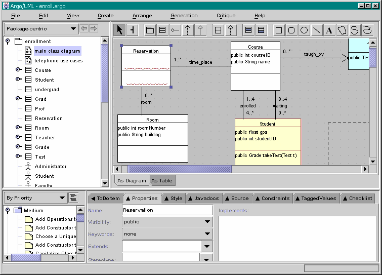

| Building Diagrams Building a Class Diagram: Step #1 |
|
|
|
|
| If you don't already have a blank screen, the click on File-New to open a new project.
We will be building the class diagram of the Enroll.argo project. Below is what the final result will look like.
Choose File-New. (The screenshots in this tour were made with ArgoUML v0.15.3) |

Back to ArgoUML Tours
Back to ArgoUML Home